Replay maps accessibility criteria to four real access needs — then tests whether the fixes actually hold up. Two of them changed after watching real people try to use the first version.
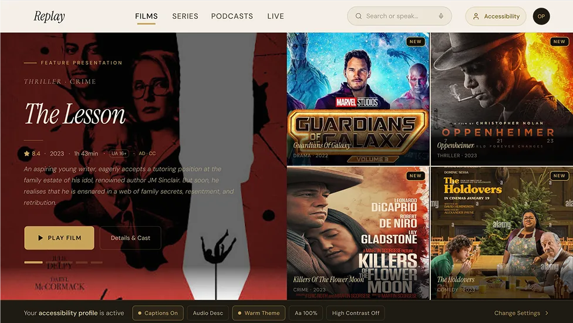
The Accessibility Hub sits in the main nav — always visible, never buried in a profile menu.
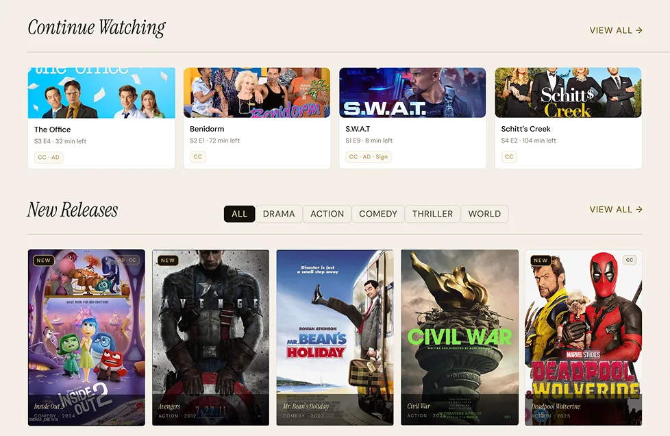
CC, AD, and Sign badges show on every card — accessibility state is visible before a viewer presses play.
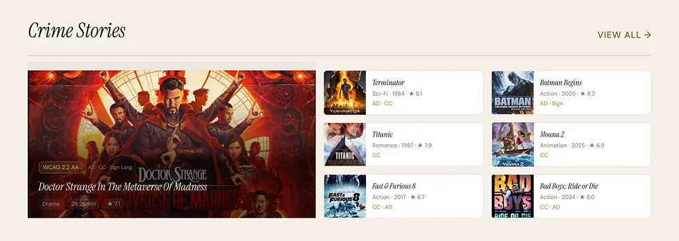
The featured card carries its own WCAG 2.2 AA tag — compliance shown as a real UI element, not a footnote.
Replay is an accessibility-first streaming concept for disabled users who are poorly served by OTT platforms.
I wanted to know what that actually costs different disabled users — not in the abstract, but in specific, testable friction: what makes someone give up on a video app in the first two minutes.
I researched each disability category first, then built personas from the evidence which gave me measurable, defensible parameters, not to prove rigour, but to design from real barriers instead of guesswork.
Checked against Netflix, Prime Video, Disney+, Hulu, and YouTube's own web accessibility documentation. Each gap below is solved later in this case study.
Prime Video's gap was independently tested and reported. The others reflect an absence of documentation across all five platforms, not a confirmed absence of the feature.
The personas came from secondary research, then were tested with real users later in this case study. Here is how the findings became people, and what each one changed in the design.
by disability, to isolate the two or three barriers that matter most on a streaming platform.
each cluster became a pain point and a goal on an OTT platform, not a generic one.
in a specific real condition: diabetic retinopathy, hyperacusis, dyslexia, limb difference.
every persona linked to specific criteria, so each solution can be measured.
Together they cover the full spread of WCAG 2.2 — visual, auditory, cognitive and motor — across the 1 billion+ people the WHO estimates live with a disability.
Across 25 mobile apps, violation rates were above 90%. The most-failed areas: live video without captions, no audio description, background audio that can’t be turned off, unclear fonts, no colour choice.
Ballantyne et al., 2018One-size-fits-all image descriptions are insufficient for people with vision impairments and lead to inaccurate descriptions.
Stangl et al., 2020Line height of at least 1.5× is the accessibility baseline for text spacing.
WCAG 1.4.12 Text SpacingLighting conditions change how much a low-vision user can see, so readability can’t depend on ideal conditions.
Hoogsteen & Szpiro, 2023Users worry about the accuracy of automatic captions and prefer caption styles they already know.
Berke et al., 2017Deaf and hard-of-hearing streamers describe real-time captioning as a platform gap.
Cao et al., 2023Warm backgrounds — peach, orange, yellow — with dark text improve readability for dyslexic readers.
Rello & Bigham, 2017Target size and dragging are defined as accessibility requirements, not preferences.
WCAG 2.5.8 Target Size · 2.5.7 DraggingPhysical-disability evidence is the thinnest here, which is why the keyboard solutions are flagged later as validated by design review, not live testing.
Each persona is grounded in a specific, real condition. The behaviour underneath it is what actually shaped the design, more than the diagnosis label did.
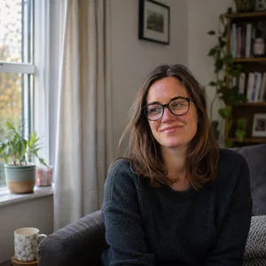
Plans to binge-watch a favourite show while her family is away. She needs an app with customisable visual settings she can rely on alone.
Video lacks visual alternatives; screen glare and colour choices cause real discomfort.
Stopped browsing visually altogether, picks shows by asking family, or repeat things she already knows, because scanning a thumbnail grid to decide isn't worth the strain.
Needs to analyse global audio and video content for work — his sound sensitivity means standard playback isn't an option.
Uncontrollable background noise; no captions or transcripts for live content.
Watches almost everything with captions on and volume near zero, even alone — certain frequencies are genuinely uncomfortable for him, so silence is the default, not the exception.
Needs to watch 12 films across five languages for her dissertation — she needs an organised, readable structure, not just subtitles.
Complex layouts and dense text blocks are hard to process and retain.
Built her own workarounds before touching Replay — a browser extension that changes background colour, and a habit of screenshotting text to re-read slower in a photo app.
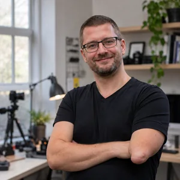
Immerses in media for research to make his own content — he needs full keyboard navigation and voice command support to work efficiently.
Limited keyboard support forces reliance on precise mouse or touch control.
Already ruled out apps that need holding a device and tapping at once — if it doesn't work one-handed and keyboard-only, he leaves rather than fights it.
19 from WCAG 2.2, plus Google's Material Design and peer-reviewed research. Not picked from a generic compliance list — each criterion earned its place by solving something one of these four people actually experiences.
| Persona | Criteria focus | Example | Source | Level |
|---|---|---|---|---|
| Anna — Low vision | Contrast, resizing, audio description, typography | 1.4.3 · 1.4.6 · 1.4.4 · 1.2.5 · 1.2.7 | WCAG 2.2 + Material Design 3 | AA–AAA |
| Shawn — Hearing | Captions, background audio, live transcripts | 1.2.2 · 1.4.7 · 1.2.9 | WCAG 2.2 | A–AAA |
| Mia — Cognitive | Visual presentation, auth, error handling, warm themes | 1.4.8 · 3.3.3 · 3.3.7 · 3.3.8 · 3.3.9 | WCAG 2.2 + Rello & Bigham, 2017 | A–AAA |
| Gareth — Physical | Keyboard nav, focus, target size, dragging | 2.1.3 · 1.4.13 · 2.4.10 · 2.4.11 · 2.5.7 · 2.5.8 | WCAG 2.2 | AA–AAA |
Four decisions guided every design choice in this project — not abstract values, but specific constraints I checked each solution against:
Every solution designed is shown below, organised by the person it was built for.
To enhance the text readability of Anna, sufficient contrast ratio has been provided between the text and the background. UI components also have been incorporated in such a way that it fulfils the accessibility needs of Anna for contrast ratio. Level AAA contrast (7:1 minimum) implemented across all primary UI elements, to ensure readability for users with severe visual impairment.
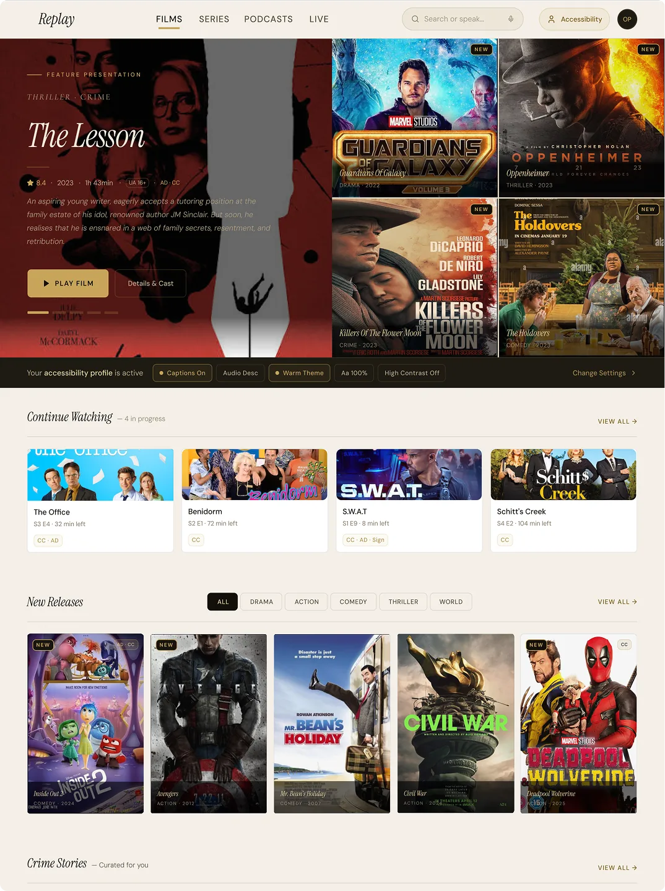
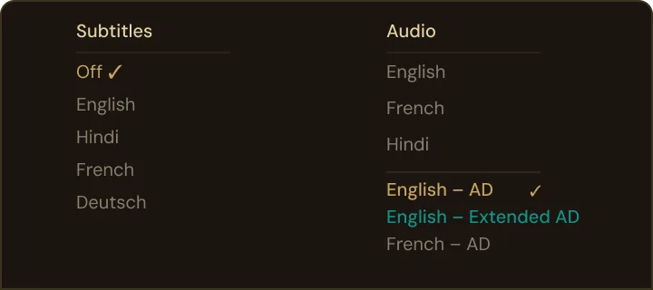
Pre-recorded AD for standard scenes; extended AD auto-pauses video when a scene needs more description time than the pause allows.
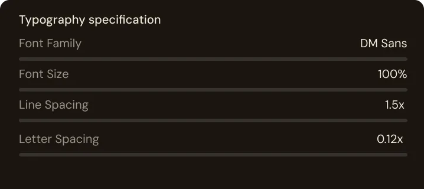
DM Sans body font - clean sans-serif for readability. 1.5× line height, 0.12em letter spacing — both help low-vision and dyslexic readers.
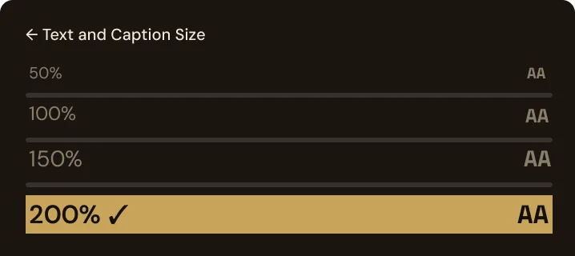
Font size - scalable from 50 to 200%, for app UI & including navigation, headings, card titles. Caption scales to 200% without layout break — WCAG 1.4.4 AA.
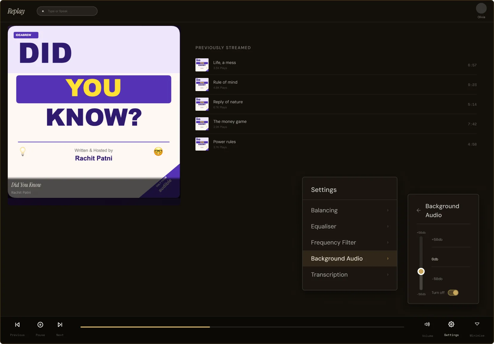
WCAG 1.4.7 requires that background audio can be turned off or is at least 20dB lower than foreground speech. Replay goes further by providing a continuous dB slider and a full mute toggle.
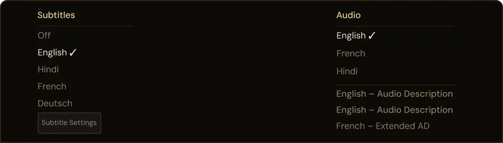
Pre-recorded captions ensure all dialogue, sound effects, and speaker identification are conveyed in text across multiple languages to serve diverse audiences. Captions are available in every language the audio track supports.
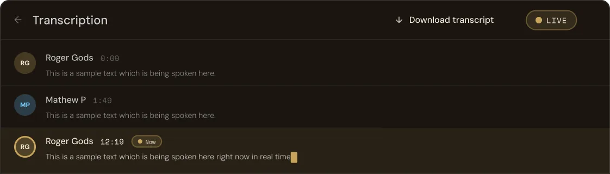
Real-time transcripts with speaker labels and timestamps for live content, downloadable afterward. Allowing users to switch from listening to reading at any point during a live stream.
In a study conducted by Rello & Bigham, 2017, they concluded that warm backgrounds — Orange (#EDDD6E), Peach (#EDD1B0), and Yellow (#F8FD89) — paired with black text significantly improve reading for dyslexic users. It isn't a WCAG-mandated criterion, but the evidence was concrete enough to act on directly.
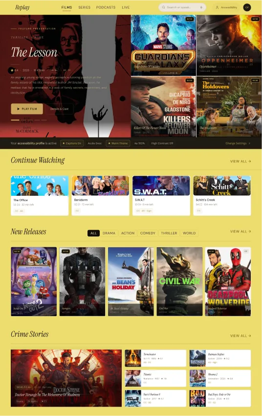
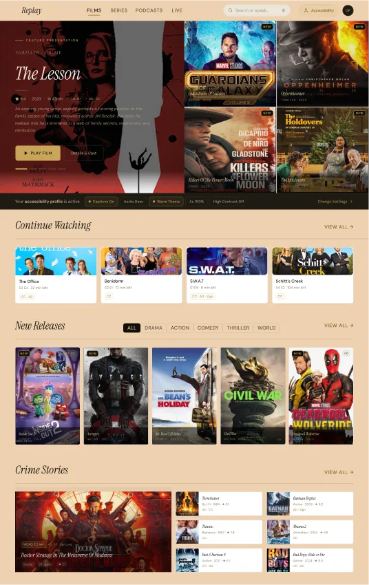
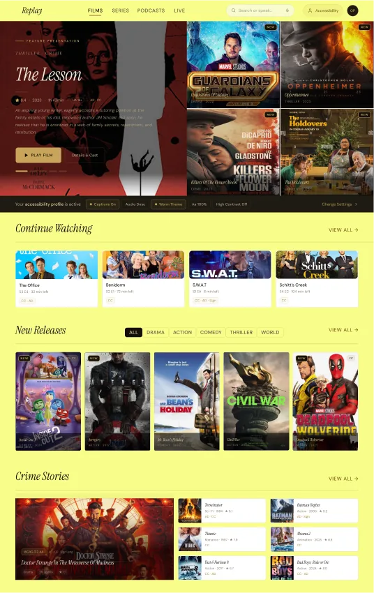
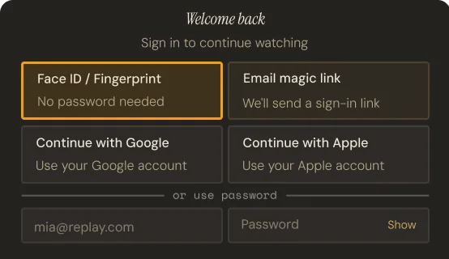
Passwords are a cognitive-function test many dyslexic users struggle with. Biometric, magic link, Google, and Apple sign-in are offered alongside password — never as the only option
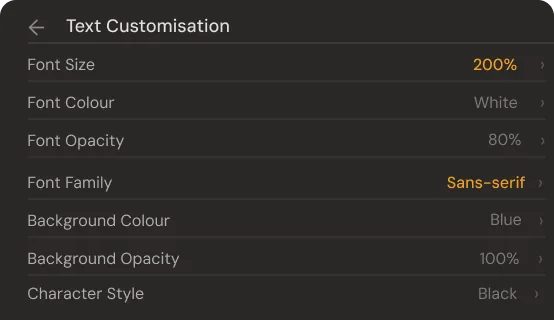
Dyslexic users need control over how text is presented, not one fixed style. Font size, colour, opacity, family, and background are all customisable, with lines capped at 80 characters to reduce reading strain.
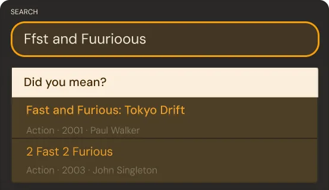
Dyslexic users frequently make spelling errors leading to abandoning the platform when a search returns nothing. Automatic error detection offers correction suggestions in real time.
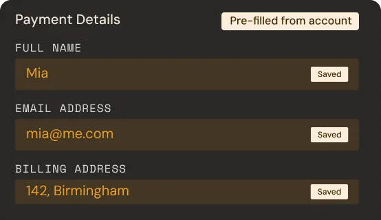
Re-entering the same information across multiple steps adds memory burden for dyslexic users. Replay never asks for information already provided — forms are pre-filled from previous information.
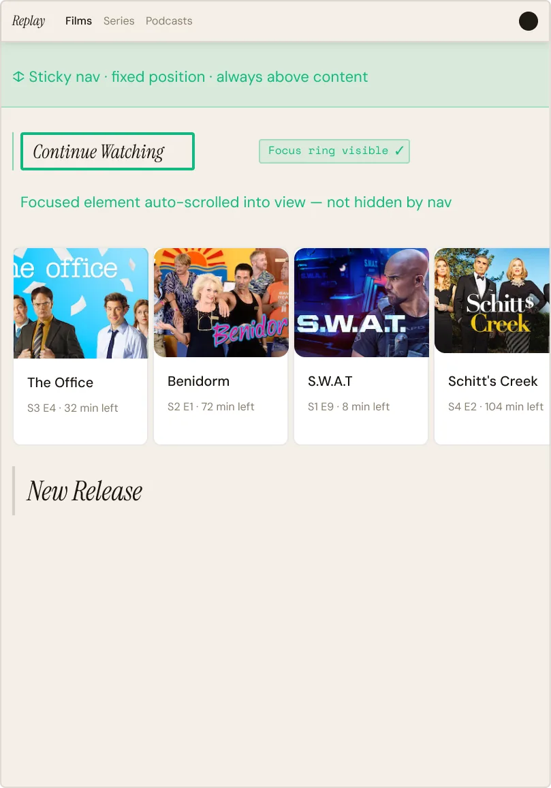
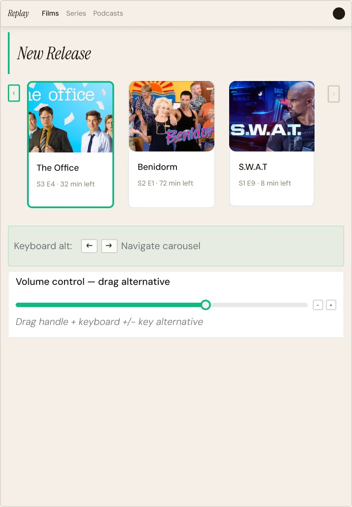
The focused components are not entirely hidden by author-created content such as sticky navigation bars (WCAG 2.4.11). The other criterion ensures that any action requiring a dragging movement — such as a carousel scroll or volume slider — also has a single-pointer alternative (WCAG 2.5.7). Both criteria are critical for Gareth who cannot drag.
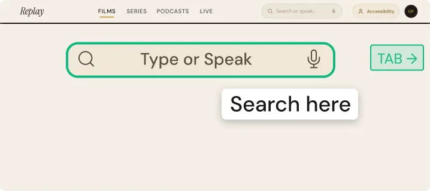
Full keyboard operability, no exceptions; every interactive element shows a dismissible tooltip on Tab focus.
Clear H1/H2/H3 hierarchy lets keyboard users jump between sections without tabbing through every card.
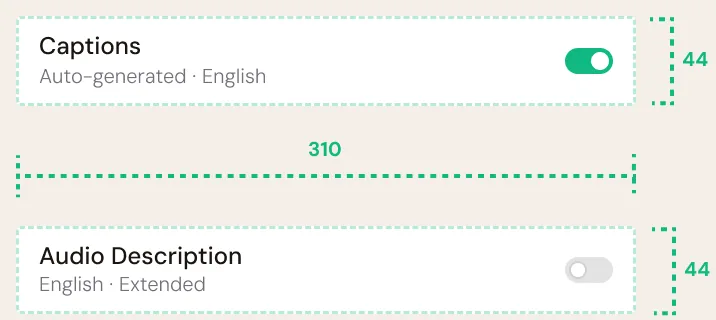
44×44px minimum touch targets sitewide — nearly double the 24×24px WCAG minimum.
3 of 8 had disabilities: dyslexia, limb difference, low vision. Recruited through accessibility communities, disability-focused networks, and personal outreach. Eight participants were an even split of men and women.
Each session combined a task list with a think-aloud protocol — chosen to surface the reasoning behind a navigation decision, not just completion time.
Text resize was the fastest task — the feature was intuitive and well-positioned. Opening the Accessibility Hub took longer than expected, which directly led to the nav-bar fix shown in the next section. Task 1, 2 and 4 took longer due to multiple steps involved. Overall completion times remained consistent across all 8 participants.
9 positive · 8 neutral · 7 critical responses across three feedback questions. The critical ones — below, all came from the three disabled participants, and each one directly shaped a design change.
"Sections were well structured with clear labels, I never felt lost."
— P3"The dark background with white text helped with readability."
— P4"I spent a good few minutes looking. I kept clicking profile, it wasn't obvious at all."
— P5, limb difference"I couldn't find the hub quickly. A label on the nav icon would have helped."
— P2, dyslexic"Wanted captions before the film but couldn't find them anywhere, only found by accident during playback."
— P7, low vision"Warm background theme was useful, but had no idea it existed until I was told."
— P8
Only 3 of 8 testers had disabilities.
They caught 100% of the critical issues.
The two critical issues that led to design changes — the Accessibility Hub being hard to find, and the caption settings location — were raised exclusively by disabled participants. The five non-disabled participants, testing the same prototype with the same tasks, didn't surface either of them.
Why it mattersThis isn't a footnote about sample size — it's evidence that accessibility issues are frequently invisible to people who don't need the accommodation, no matter how carefully a non-disabled tester tries to think about it. Testing with non-disabled users alone would have missed both of these problems.
What it changedIt's the reason a larger disabled cohort is the first thing I'd change with more time — this finding is a limitation in method, not just an interesting statistic to report.
Here's what didn't work first, and what I built instead.
…I kept clicking profile, it wasn't obvious at all.
— P5, limb difference
Accessibility settings buried inside the Profile dropdown — three taps deep.
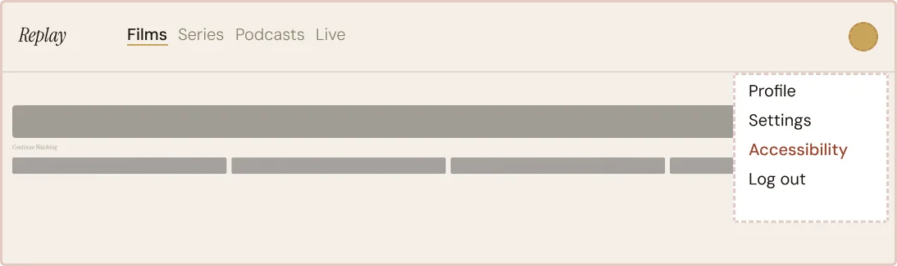
A persistent Accessibility button added directly to the main nav bar.
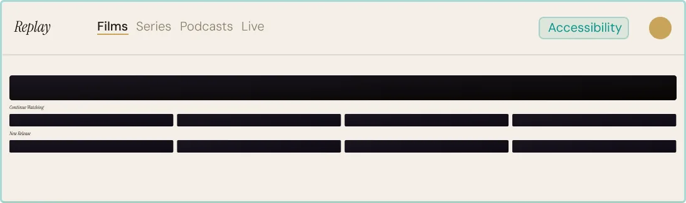
Wanted captions before the film but couldn't find them anywhere…
— P7, low vision
Captions only accessible from inside the video player, mid-playback.
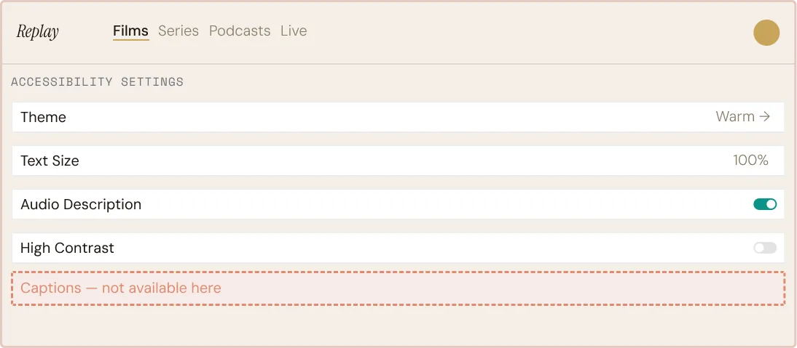
Captions added to the Accessibility Hub, settable before playback starts.
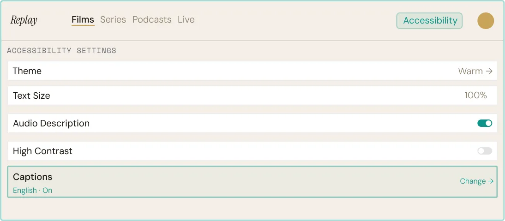
Focus ring appearance, target size, colour contrast, and layout hierarchy are all design decisions with measurable accessibility impact — not implementation details to hand off.
The two most critical fixes all came from the three disabled participants. Non-disabled participants, using the same prototype, caught none of them.
Five new criteria specifically address touch, authentication, and focus behaviour — designing for them required understanding the reasoning, not just meeting the letter of the spec.
Every solution built for a specific disability ended up improving the experience for everyone else too — that stopped feeling like a side benefit and started feeling like the actual goal.